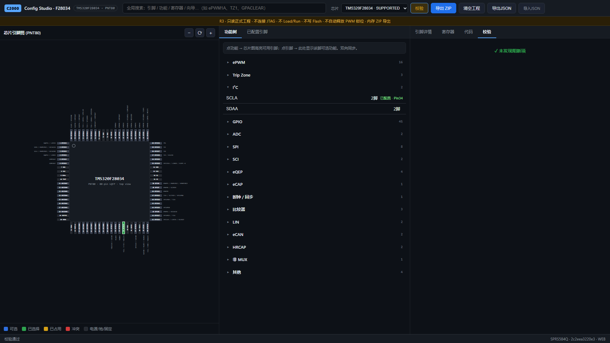

PNT80 四边顺序和坐标完全由 package JSON 驱动，前端不再硬编码脚位。
TMS320F28034 · PNT80 · R3 Web Core
像 CubeMX 一样配置 F28034
从 80 脚顶视图选择功能，通过单步向导配置 ePWM、Trip、I²C 和 GPIO，再生成可核验、可编译的 C2000 初始化代码。

一条统一配置主链
芯片图、功能树、inline 向导、已配置引脚和代码预览共享同一份 ProjectConfig，取消草稿不会污染已提交工程。
A 为 AQ 源，B 由 Dead-Band 派生；A/B、死区和 Trip 作为一个模块提交。
浏览器预览和下载文件调用同一生成核心，逐字节一致，不产生服务器 staging。
不是只跑单元测试
131 / 131
MUX 证据覆盖
信号存在性与数值 MUX 分项核验。
6 / 6
TI 编译与链接
六个生成场景通过 cl2000，零错误。
0
浏览器网络错误
真实 Chromium 用户流程中 HTTP 与 Console 错误均为零。
完整应用需要后端
本页面由 GitHub Pages 静态托管，用于展示和文档入口。配置、校验和代码生成 依赖 Flask/Waitress API；GitHub Pages 本身不能运行 Python 后端。
docker compose up --build
# 浏览器打开 http://localhost:8080/